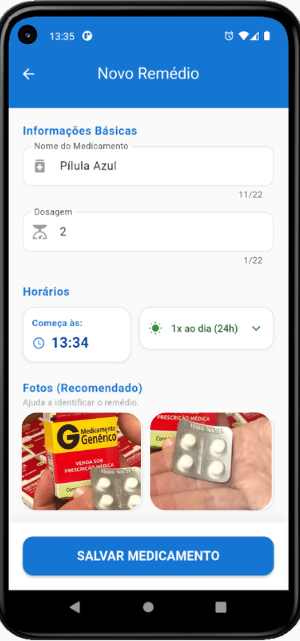

Remédio Certo
🔒 PRIVACIDADE OFFLINE · SQLITE

Assistente pessoal para controle de medicamentos, desenvolvido especialmente para idosos, cuidadores e familiares. O grande diferencial? Alarme com foto do medicamento — quando chega a hora, o app exibe a imagem do remédio cadastrado, evitando confusões em tratamentos com múltiplas medicações.
- ✅ Cadastro completo de medicamentos com fotos
- ✅ Alertas automáticos com identificação visual
- ✅ Histórico detalhado de doses tomadas
- ✅ Interface simples e acessível
- ✅ 100% offline — dados armazenados localmente com SQLite
"Não apenas lembra de tomar, mas mostra exatamente qual remédio tomar."